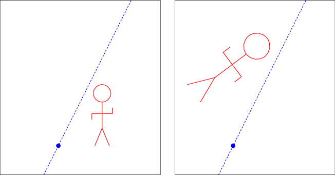
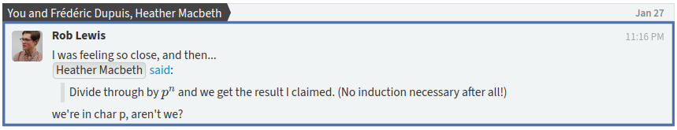

Classification of one-dimensional isocrystals
Last year, there was a big mathlib refactor to replace linear maps throughout the library with semilinear maps, a more abstract concept which, importantly, unifies linear and conjugate-linear maps.
But this is not the full extent of the generalization! Our number theorist friends here in mathlib told us that we should make sure we chose this full generality of semilinear maps, maps $f:M \to N$ such that $f(ax)=\sigma(a)f(x)$ for some ring homomorphism $\sigma$ between the scalar rings of the modules $M$ and $N$. So we and our coauthor Frédéric Dupuis implemented this full generality, and then asked them for an example to illustrate their need for this more abstract definition. This blog post tells the story of our little adventure in number theory.
It turns out that the standard use of semilinear maps in number theory is for Frobenius-semilinearity, semilinearity with respect to the ring homomorphism of the fraction field of the $p$-typical Witt vectors over a perfect characteristic-$p$ integral domain which is induced by the Frobenius automorphism of that domain. Let's backtrack to catch everyone up...
Witt vectors and isocrystals
Back in 2020, one of us (Rob), together with Johan Commelin, formalized the theory of Witt vectors in Lean. The $p$-typical Witt vectors $\mathbb{W}(R)$ over a ring $R$ are, concretely, sequences of elements of $R$, but equipped with a rather wild multiplicative and additive structure (dependent on $p$) to make this set into a commutative ring. The canonical example is the $p$-adic integers, which are the Witt vectors of $\mathbb{Z}/p\mathbb{Z}$.
A ring $R$ of characteristic $p$ has an endomorphism, constructed by sending each element $x$ to $x ^ p$. We say that $R$ is perfect if this endomorphism is an automorphism. And under mild further conditions ($R$ an integral domain) this automorphism "lifts" to an automorphism of the field of fractions of $\mathbb{W}(R)$, which we will denote $\varphi$. It's Frobenius-semilinearity, i.e. semilinearity with respect to $\varphi$, that the number theorists want to consider!1
The fundamental result here is a classification theorem for Frobenius-semilinear automorphisms of finite-dimensional vector spaces over $K$, the field of fractions of $\mathbb{W}(k)$, for $k$ an algebraically closed field of characteristic $p$ (and hence a perfect integral domain). Such an object (a finite-dimensional vector space over $K$ equipped with a Frobenius-semilinear automorphism) is called an isocrystal. The classification, which is up to a natural notion of equivalence which we'll make precise later, was proved by Manin2 building on work of Dieudonné.3
The classification is a structure theorem, expressing each isocrystal as a direct sum of elements of a certain family of simple isocrystals which we will not describe here. Initially, we had the idea of testing out our semilinear maps API by stating this theorem. It turned out, though, that the bare statement did not depend in an essential way on the mathematics we had built up. And the full proof of the theorem seemed a bit hard given the current state of mathlib. For example, it relies on the classification of simple modules in the noncommutative setting as a one-line throwaway. We leave it as an exercise for the reader.
Semilinear automorphisms of a general field
So we started playing with the one-dimensional version more concretely. Consider, for a moment, a general field $F$, equipped with a field automorphism $\sigma$. We are interested in the following objects: pairs $(V, f)$ of a one-dimensional vector space over $F$ and a $\sigma$-semilinear automorphism of $V$.
When the scalar field $F$ is $\mathbb{C}$, these objects have a natural geometric interpretation. The objects here are one-dimensional vector spaces over $\mathbb{C}$ equipped with a conjugate-linear automorphism, which you might visualize as a plane with a marked point and equipped with an orientation-reversing similarity transformation which fixes that point. Why this phrase "marked point"? This is effectively the structure you have on a one-dimensional vector space over $\mathbb{C}$. There are no "coordinates" -- for this you need a fixed basis vector -- but there is a well-defined origin point.
There is a natural notion of equivalence on these objects: $(V_1, f_1)$ and $(V_2, f_2)$ are equivalent, if there exists a (linear) isomorphism $g:V_1\to V_2$, which is equivariant in the sense that $g \circ f_1=f_2 \circ g$. In the case of one-dimensional objects over $\mathbb{C}$, this agrees well with our geometric intuition for when two orientation-reversing similarities of planes with marked points are "the same."
It's easy to cook up a large family of such objects with $V$ taken to be the field $F$ itself, considered as a one-dimensional vector space over itself: take the $\sigma$-semilinear automorphism to be $x \mapsto a \sigma(x)$ for any $a\ne 0$ in $F$. It's also fairly easy to see that, up to the sense of equivalence described above, this covers all possible one-dimensional objects.
But this is not the interesting part of the story. Some choices of $a\in F$ lead to equivalent objects, and the question is, which? For example, in the case of $\mathbb{C}$, the equivalent transformations $f_1(z)=a_1\overline{z}$, $f_2(z)=a_2\overline{z}$ are precisely those for which $|a_1|=|a_2|$. That is, for a given $r\in\mathbb{R}^+$, all transformations $f(z)=a\overline{z}$ with $|a|=r$ are equivalent to $f(z)=r\overline{z}$ itself, geometrically corresponding to the same transformation of a "rescaling by $r$" about the marked point of a reflection in a line through that marked point.

In general, the characterization of equivalence is the following: two $\sigma$-semilinear transformations $f_1(x)=a_1\sigma(x)$, $f_2(x)=a_2\sigma(x)$ of $F$ are equivalent if there exists a nonzero element $b\in F$ such that $a_1/a_2 = \sigma(b)/b$. The set of elements of $F$ of the form $\sigma(b)/b$ forms a multiplicative subgroup of $F^\times:=F\setminus\{0\}$. In the case of conjugation on $\mathbb{C}$ this subgroup is the unit circle. And classifiying the equivalence classes of one-dimensional objects reduces to finding a family of canonical representatives of the cosets of this subgroup -- in the case of $\mathbb{C}$, each coset of the unit circle action has a unique representative $r \in\mathbb{R}^+$.
Frobenius-semilinear automorphisms of the fraction field of the Witt vectors
So, for the fraction field $K$ of the Witt vectors of an algebraically closed field $k$, what is this multiplicative subgroup $ \{ \varphi(b) / b : b \in K^\times \}$ of the nonzero elements $K^\times$ ? Also, the cosets of this subgroup in $K^\times$ are precisely in bijection with the isocrystals of dimension 1, so what is a complete set of representatives of the cosets?
At this point, we found a 2011 MathOverflow post from a drive-by pseudonym asking precisely this reformulated question. "Asker," you gave no motivation for this rather specific and technical question ... we're still wondering whether you came up with it by the same route that we did!
So here is the answer. The Witt vectors $\mathbb{W}(k)$ live inside their fraction field $K$ and there is a distinguished multiplicative subgroup $\mathbb{W}(k)^\times$ of $K^\times$, the original units of $\mathbb{W}(k)$. In the representation of $\mathbb{W}(k)$ as a sequence of elements of $k$, the units are precisely the sequences whose first element is nonzero.
Recall that a Witt vector $x$ over $k$ is given by a sequence $(\ldots, x_1, x_0)$ of elements of $k$. (Witt vectors are traditionally written as trailing to the left, to be suggestive of how we write numbers in decimal notation from largest place value to smallest.) The $p$-typical Witt vector $(\ldots, 0,1,0)$ is referred to in $\mathbb{W}(k)$ as $p$; it actually ends up being the sum of $p$ copies of $1=(\ldots, 0,0, 1)$, under the crazy Witt vector addition. Multiplication (in the crazy Witt vector sense) by $p$ sends any Witt vector to a Witt vector with $0$ in the first position, and more generally multiplication by $p^m$ for any $m\in \mathbb{N}$ sends any Witt vector to a Witt vector with $m$ leading zeros. In fact, every nonzero Witt vector is of the form $p^m w$ for some unique $m\in\mathbb{N}$ and some unique $w\in\mathbb{W}(k)^\times$. The statement for the fraction field $K$ is only slightly more complicated -- every nonzero element of $K$ is of the form $p^m w$ for some $m\in\mathbb{Z}$ and some Witt vector $w\in\mathbb{W}(k)^\times$. (In fact, the former statement is equivalent to showing that the Witt vectors over a perfect field are a discrete valuation ring.)
This subgroup $\mathbb{W}(k)^\times$ turns out to be precisely the things in $K$ which can be expressed as $\varphi(b)/b$ for some $b \in K^\times$ (and it turns out that $b \in \mathbb{W}(k)\setminus \{0\}$ suffices).4 Make a note of this statement. The rest of the math in this blog post will be devoted to proving this.
But to conclude the main discussion, our theorem is that every coset of the special subgroup has a representative of the form $p^m$ for some $m\in\mathbb{Z}$. We call $K$ (considered as a one-dimensional vector space over itself), equipped with the Frobenius-semilinear automorphism sending $x\in K$ to $p^m\varphi(x)$, the standard isocrystal of slope $m$. All one-dimensional isocrystals are equivalent to one of these standard isocrystals.
Multiplication of Witt vectors
Given the structure of the statement we're working toward, it's not surprising that we'll need to dive into how multiplication on Witt vectors works. In this section we'll prove the following lemma:
Multiplication lemma. For every positive $n \in \mathbb{N}$, there is a function $f_n : k^{n} \times k^{n} \to k$ such that for every $x, y \in \mathbb{W}(k)$, the $n$-th coefficient of $x \cdot y$ is given by
$$ x_{n}y_0^{p^{n}} + y_{n}x_0 ^{p^{n}} + f_n(x_0, \ldots, x_{n-1}, y_0, \ldots, y_{n-1}). $$
The $n$-th coefficient of the product of two Witt vectors $x = (\ldots, x_1, x_0)$ and $y=(\ldots, y_1, y_0)$ is polynomial in the first $n$ coefficients of each: that is, for each $n$ there is a polynomial $m_n$ such that $(xy)_n = m_n(x_0, \ldots, x_n, y_0, \ldots, y_n)$.
What we know about the polynomials $m_n$ from the abstract construction of Witt vector multiplication is the following. Let $w_n(x_0, \ldots, x_n) = x_0^{p^n} + p x_1^{p^{n-1}} + \ldots + p^n x_n$. (These polynomials, the "Witt polynomials," are ubiquitous in the theory of Witt vectors.) Then,
$$w_n(m_0, m_1, \ldots, m_n) = w_n(x_0, \ldots, x_n)w_n(y_0, \ldots, y_n),$$
that is,
\begin{align} & w_n\left(m_0\left(x_0, y_0\right), m_1\left(x_0, x_1, y_0, y_1\right), \ldots, m_n\left(x_0, \ldots, x_n, y_0, \ldots, y_n\right)\right) \newline & = \ w_n\left(x_0, \ldots, x_n\right)w_n\left(y_0, \ldots, y_n\right). \end{align}
This turns out to completely characterize the polynomials $m_n$, and intuitively, it's not so hard to see why: $m_n$ only appears once in the $n$-th such equation as stated above, so we can solve for it.
The multiplication lemma asks for a little more, namely, the leading terms of $m_n$. To get this, let's partially unfold the definition of $w_n$ above. We end up with something like
\begin{align} & m_0(x_0, y_0)^{p^n} + p[\cdots] + p^nm_n(x_0, \ldots, x_n, y_0, \ldots, y_n) \newline & = \ (x_0^{p^n} + p[\cdots] + p^n x_n)(y_0^{p^n} + p[\cdots] + p^n y_n). \end{align}
Thought experiment: cancel all three $p[\cdots]$ because we're in characteristic $p$. Then subtract the $p^n$-th power of the identity $m_0(x_0, y_0) = x_0y_0$. Then both sides have a common factor of $p^n$, which you can divide through. This gives exactly the multiplication lemma above, except for one last term $p^n x_n y_n$, which again can be canceled because we're in characteristic $p$.
Unfortunately there's a flaw in this thought experiment. We're alternatingly using characteristic $p$ to make terms of the form $p\cdot X$ vanish and characteristic not-$p$ to divide through by $p$. This argument can be made to work, but it requires a careful restructuring of the idea to frontload the characteristic-zero operations. We make the polynomials $m_n$ be polynomials over $\mathbb{Z}$, and perform the first part of the argument in that setting, interpreting them as polynomials over $k$ only before the final step.
Recursively constructing a Witt vector
Let's come back to the statement whose proof we deferred above. Here is the precise variant we prove:
Existence lemma. For Witt vectors $v, w$ with nonzero leading coefficients, there exists a Witt vector $b$ such that $\varphi(b)\cdot v = b \cdot w$.
This is actually only one direction of our earlier claim, but it's the direction we need. On the other hand, it is slightly more general, for the sake of convenience: the earlier statement effectively fixed $v = 1$.
Let's write this out in coordinates:
$$(\ldots, b_1^p, b_0^p) \cdot (\ldots, v_1, v_0) = (\ldots, b_1, b_0) \cdot (\ldots, w_1, w_0). \tag{*}$$
Here $\cdot$ denotes Witt vector multiplication, so now our investigation into this operation will come in handy. The crucial consequence of the "multiplication lemma" from the previous section is that the constraint imposed by comparing $n$-th coefficients of $(*)$ is polynomial. Specifically, it says that for positive $n$,
\begin{align} & b^p_{n}v_0^{p^{n}} + v_{n}b_0 ^{p^{n+1}} + f_n(b^p_0, \ldots, b^p_{n-1}, v_0, \ldots, v_{n-1}) \newline & = \ b_{n}w_0^{p^{n}} + w_{n}b_0 ^{p^{n}} + f_n(b_0, \ldots, b_{n-1}, w_0, \ldots, w_{n-1}) \end{align}
which is polynomial of degree $p$ in $b_{n}$, since $v_0$ and therefore $v_0^{p^{n}}$ are nonzero. This allows us to construct $b$ recursively, coefficient by coefficient. The base case is straightforward, since for any Witt vectors $x$ and $y$, $ (xy)_{0} = x_{0} y_{0} $. Suppose we have found suitable coefficients $b_0, \ldots, b_{n-1}$. We invoke the algebraic closedness of $k$ to solve the above polynomial equation for $b_n$. The sequence $(\ldots, b_1, b_0)$ thus constructed forms a Witt vector that solves $(^*)$.
This completes the analysis of the set of possible ratios $\varphi(b)/b$ for $b \in \mathbb{W}(k)$, and thus the classification of one-dimensional isocrystals.
The formalization process
Rob is a logician and Heather is a geometer, and this theorem was just a quick proof of concept for a larger project, our paper with Frédéric Dupuis on semilinear maps. Rob and Johan Commelin (who provided a lot of helpful advice on this formalization) worked together on the initial mathlib development of Witt vectors. But this was Rob's first foray into the subject on his own, and Heather's first foray at all.
To quote from Rob and Johan's paper, "Witt vectors have a reputation among mathematicians of being forbidding and impenetrable." And indeed this was our experience in multiple ways. Not only was it difficult to learn to work with Witt vectors; what's more, this barrier to entry means that there are few elementary expositions of mathematical subjects (such as isocrystals) that depend on them. We couldn't find the one-dimensional isocrystal classification, worked through as above, written down anywhere.
It's a cliché to say that the name "proof assistant" is a misnomer. Usually, formalizing a mathematical result is strictly harder than proving it in the traditional manner -- the computer just gets in the way. But we had the opposite experience proving this theorem. Working out the details of this argument on paper was difficult, and we were rarely sure that we were understanding a given statement correctly, or even that it was well formed. Seeing the confirmation from Lean that a theorem statement typechecked -- and the back and forth with the system to write a type-correct statement -- greatly helped us understand the mathematics.
And the proof-checking helped too. We mentioned above a wrinkle when proving the "multiplication lemma": some coefficients of the polynomial we were interested in vanish in characteristic $p$, so we had to work first with integer polynomials and later, after canceling a power of $p$, interpret them in the field $k$. This subtlety escaped us the first time around!

Back to our original motivation: the semilinear maps machinery worked great. As we had hoped, it sat invisibly in the background. Lean's extensible syntax was easy to use to set up notation M₁ ≃ᶠˡ[p, k] M₂ for the type of Frobenius-semilinear isomorphisms from M₁ to M₂.
notation M₁ ` ≃ᶠˡ[` p `,` k `] ` M₂ := linear_equiv (witt_vector.fraction_ring.frobenius_ring_hom p k) M₁ M₂
From there, an isocrystal could be defined exactly as on paper: a $K$-module equipped with a Frobenius-semilinear automorphism.
class isocrystal (V : Type*) [add_comm_group V] extends module K(p, k) V := ( frob : V ≃ᶠˡ[p, k] V )
Check out the final statement of the classification theorem in mathlib here.
-
A couple notes from the number theorists: "You know that Frobenius is complex conjugation, right? Frobenius is the canonical Galois element for a $p$-adic place, like complex conjugation is the canonical Galois element for an infinite place.... [O]ne could argue that the two different motivations for formalising semilinear maps boil down to an archimedean and a nonarchimedean avatar of the same underlying idea." ↩
-
Ju. I. Manin. Theory of commutative formal groups over fields of finite characteristic. Uspehi Mat. Nauk, 18(6 (114)):3–90, 1963. ↩
-
Jean Dieudonné. Lie groups and Lie hyperalgebras over a field of characteristic $p > 0$, IV. American Journal of Mathematics, 77 (3): 429–452, 1955. ↩
-
Another note from the number theorists: "both the unit circle in $\mathbb{C}^\times$ and the units $W(k)^\times$ in $K^\times$ can be computed as the set of elements of absolute value $1$." ↩